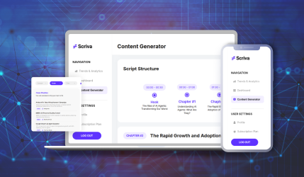

AgentsArchitects – AI Systems & Automation Portfolio
AI Agents • Workflow Automation • Enterprise Integrations
About AgentsArchitects
AgentsArchitects is an AI automation and agent engineering company focused on building production-grade intelligent systems that help organizations streamline operations, improve decision-making, and reduce manual workload. We specialize in designing custom AI agents, workflow automation platforms, and enterprise integrations tailored to real operational environments.
Our team partners with startups and enterprise organizations to transform complex processes into scalable, data-driven systems. From internal workflow automation to full-scale AI platforms, we focus on delivering reliable, secure, and performance-driven solutions that create measurable business impact.
End-to-End AI Delivery
Strategy → Build → Deploy
Enterprise Integrations
Works with existing tools & systems
Production-Grade Systems
Secure, scalable, reliable
Multi-Industry Expertise
Legal, Finance, SaaS, Staffing
Long-Term AI Partner
Beyond one-time projects
98%
Client Satisfaction Rate
371+
Custom AI Workflows Deployed
12+
Countries Global Reach
Our Portfolio & Implementations
AI agents, automation platforms, and intelligent systems designed and deployed to solve real operational challenges across industries.
Enterprise AI Transformation Platform
Enterprise Deployment | Multi-System Integration | Production Scale | AI Automation Infrastructure

AgentsArchitects successfully delivered a full-scale enterprise AI transformation platform designed to automate operations, integrate intelligent agents, and streamline complex workflows across business functions. The solution included custom AI agent architecture, enterprise system integrations, and automation layers built for scalability and performance. This implementation supported large-scale operational environments and focused on reliability, security, and measurable efficiency gains. The platform enabled intelligent process automation, improved decision visibility, and reduced manual workload across departments. This project represents our ability to deliver production-grade AI systems for enterprise organizations with long-term impact and operational scale.
Scriva – AI Powered Script Generator
Time: 6 Weeks | Team: 5 | Efficiency: 70% Faster | Impact: 10x Engagement

Scriva was developed to solve the time-consuming challenge of creating structured, high-quality scripts for videos, courses, and content platforms. AgentsArchitects designed an AI system capable of understanding topics, generating chapter-wise breakdowns, and producing coherent scripts with logical flow. The platform automates research, idea structuring, and content drafting, allowing creators to focus on creativity instead of manual writing. By integrating contextual language models, Scriva can adapt tone, style, and format based on user intent. This significantly reduced production time while increasing consistency and engagement across content outputs. The solution supports scalable content operations for teams managing multiple projects simultaneously. Overall, Scriva transforms content production into a faster, more intelligent, and repeatable process with measurable productivity improvements and creative efficiency.
FinTrack – AI Financial Management
Time: 8 Weeks | Team: 6 | Efficiency: 60% Automation | Impact: Better Financial Visibility

FinTrack was designed to bring clarity and intelligence to financial data management by automating tracking, categorization, and analysis. AgentsArchitects built an AI-driven system that continuously monitors financial activities, organizes transactions, and generates insights that help users make informed decisions. The platform reduces dependency on manual spreadsheets and simplifies complex financial workflows. Predictive capabilities help identify spending patterns, forecast trends, and highlight opportunities for optimization. By integrating multiple data sources, FinTrack creates a unified financial view that improves visibility and control. The system also enhances accuracy in reporting while saving significant operational time. This solution enables organizations and individuals to manage finances more strategically, reduce errors, and improve planning through intelligent automation and data-driven insights across financial operations.
TrueHire – AI Hiring Agent
Time: 7 Weeks | Team: 5 | Efficiency: 65% Faster Hiring | Impact: Improved Matching

TrueHire was built to streamline and modernize the recruitment process using intelligent automation. AgentsArchitects developed an AI agent that assists in sourcing, screening, and engaging candidates while reducing manual intervention from hiring teams. The system analyzes candidate profiles, matches them with job requirements, and helps prioritize the best fits based on data signals. Automated communication and scheduling features further accelerate hiring workflows. This significantly reduces the time spent on repetitive tasks such as resume review and initial outreach. The platform improves hiring accuracy and helps organizations identify top talent more efficiently. By combining automation with smart decision support, TrueHire enables recruiters to focus on strategy and relationship-building rather than operational workload, resulting in faster and more effective recruitment outcomes.
Talent Acquisition – Recruitment Automation
Time: 9 Weeks | Team: 7 | Efficiency: 75% Less Manual Work | Impact: Scalable Hiring

This recruitment automation solution was developed to manage the complete hiring lifecycle through AI-powered workflows. AgentsArchitects created a system that automates resume screening, candidate tracking, interview coordination, and communication. The platform reduces administrative overhead while ensuring a structured and scalable recruitment pipeline. It helps organizations handle high volumes of applications without compromising on quality or speed. Intelligent filtering allows HR teams to identify the most relevant candidates quickly. The system also improves internal collaboration by organizing hiring data in a centralized environment. This leads to faster decision-making and a smoother candidate experience. By removing repetitive manual steps, the solution enables recruitment teams to focus on talent strategy, engagement, and growth, ultimately improving hiring efficiency and operational productivity.
Lexgenix – AI Legal Workspace
Time: 10 Weeks | Team: 8 | Efficiency: 70% Faster Processing | Impact: Better Case Prep

Lexgenix was developed as a comprehensive AI workspace to enhance productivity in legal environments. AgentsArchitects designed a suite of intelligent tools that support legal research, document analysis, contract drafting, and case preparation. The system can process large volumes of legal data, extract relevant insights, and assist professionals in building strong arguments and documentation. By automating repetitive legal tasks, Lexgenix allows lawyers to focus on strategic decision-making and client engagement. The platform improves accuracy, reduces research time, and supports better case organization. Its AI-driven recommendations help identify patterns, risks, and relevant references quickly. Overall, Lexgenix transforms traditional legal workflows into a more efficient, data-driven, and scalable digital environment that supports modern legal practices and operational excellence.
Flight Booking – AI Automation
Time: 6 Weeks | Team: 4 | Efficiency: 60% Faster Flow | Impact: Better CX

The Flight Booking AI system was designed to simplify and enhance travel planning through intelligent automation. AgentsArchitects built an AI-powered assistant that analyzes user preferences, searches for optimal travel options, and provides recommendations in a structured interface. The system reduces the complexity of manual search processes and improves booking efficiency. Automated workflows support query handling, flight comparison, and decision support. This results in a faster and smoother user experience while reducing the workload on support teams. The platform also adapts based on user behavior and travel patterns, offering personalized suggestions over time. By integrating automation into booking operations, the solution improves customer satisfaction, speeds up decision-making, and enhances overall operational performance within travel service environments.
Agent Creation Platform
Time: 12 Weeks | Team: 9 | Efficiency: 80% Faster Deployment | Impact: Scalable AI Adoption

The Agent Creation Platform was built to help organizations design, deploy, and manage custom AI agents tailored to their specific workflows. AgentsArchitects developed a modular system that enables businesses to create intelligent assistants without complex technical barriers. The platform supports integration with existing tools and allows teams to automate tasks across departments. It includes features for agent configuration, deployment control, and performance monitoring. This approach accelerates AI adoption while maintaining flexibility and scalability. Organizations can build multiple agents for different use cases such as operations, support, and analytics. The platform simplifies the entire lifecycle of AI implementation, from planning to deployment. As a result, companies can scale automation faster and achieve measurable productivity gains across business processes.
LethiaAI – Workflow Automation Suite
Time: 8 Weeks | Team: 6 | Efficiency: 70% Task Automation | Impact: Ops Efficiency

LethiaAI was developed to automate repetitive operational workflows and improve efficiency across departments. AgentsArchitects designed the system to connect with existing business tools and streamline processes such as task management, communication, and internal coordination. The platform uses intelligent automation to reduce manual effort and increase process speed. By identifying routine activities that consume time, LethiaAI helps teams shift focus to strategic work. It ensures smoother collaboration and better task visibility across operations. The system also improves consistency by standardizing workflows and minimizing human errors. This leads to increased productivity and stronger process control. Overall, LethiaAI acts as a central automation layer that enhances efficiency, reduces operational friction, and supports scalable business growth.
FenceSoftAI – AI-Powered Fencing CRM
Time: 9 Weeks | Team: 7 | Efficiency: 65% Faster Conversion | Impact: Sales Productivity

FenceSoftAI was built as a specialized CRM tailored for fencing companies to manage sales, leads, and operations more efficiently. AgentsArchitects developed an AI-enabled system that automates lead capture, quotation generation, scheduling, and invoicing. The platform helps businesses manage customer interactions and project workflows in one centralized environment. Intelligent insights allow teams to track performance and identify opportunities to improve conversion rates. Automation reduces manual administrative work, enabling staff to focus more on customer service and business development. The system also improves response time and operational accuracy. By bringing AI into a niche industry, FenceSoftAI supports better organization, faster sales cycles, and improved productivity, helping companies scale their operations with structured and data-driven processes.
Ready to Transform Your Deal Diligence?
Trusted by startups and enterprise teams for building production-grade AI systems
Schedule a Discovery Call